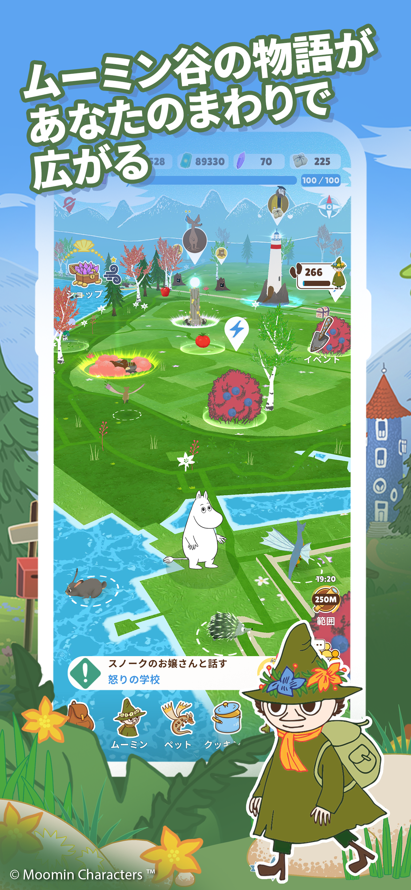
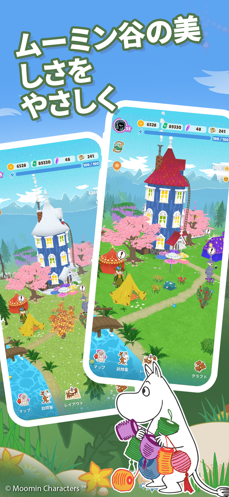
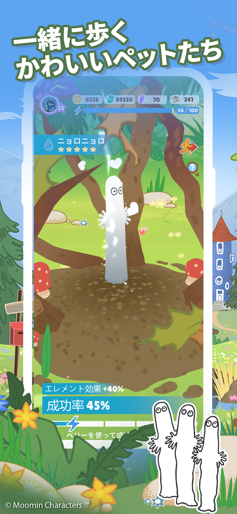
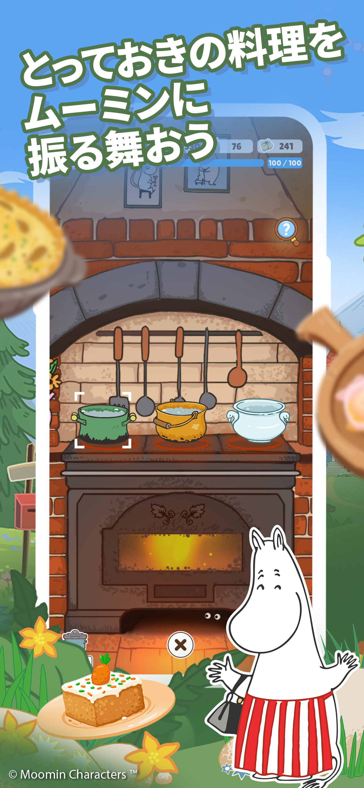
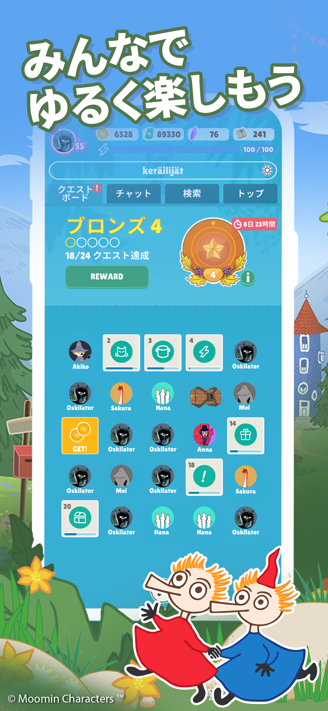
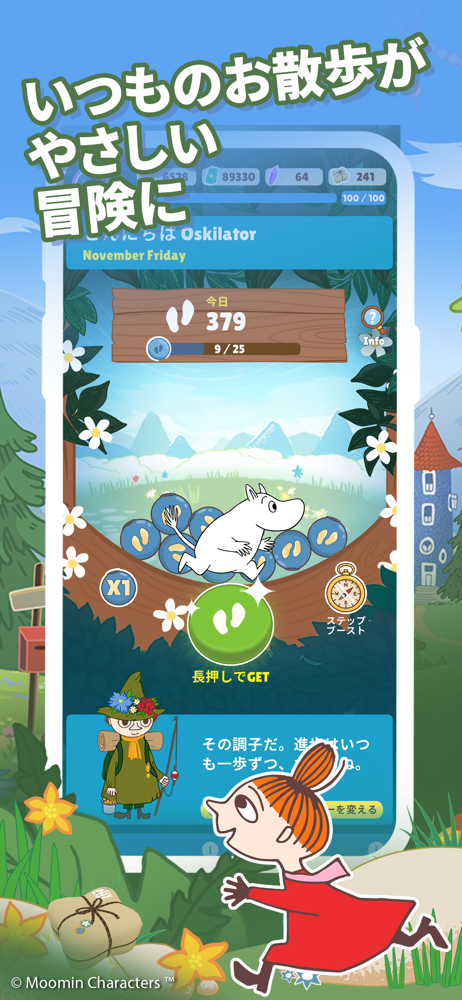
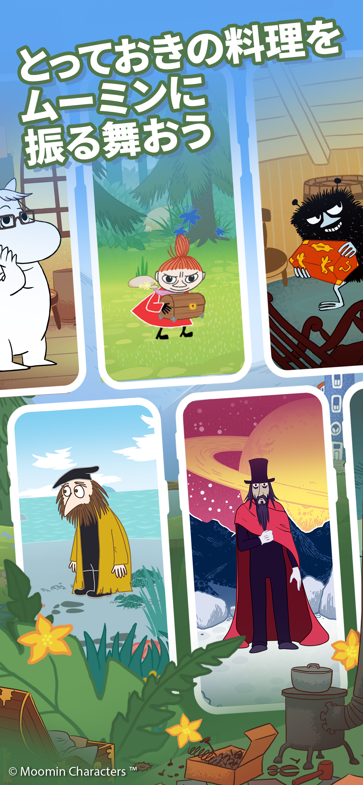

00 / Japan live-service phase
A Japan-only F2P live game built around seasonal economy
During the focused Japan live-service phase, players explored the real-world map, progressed Moomin friends, collected pets and resources, cooked food, completed seasonal tasks, restored landmarks, and developed a personal valley.
This case focuses on the final four-year Japan F2P phase: establishing a repeatable content cadence, managing 30+ content updates, coordinating external partners, evolving the economy from live performance and analytics analysis, supporting acquisition by a Japanese corporation, and remaining accountable through sunset. Earlier involvement with the product is background context; the Live Ops scope here is specifically the Japan live game.
Japan-only product impact
Strong retention supported deeper monetization.
LiveOps, reward, pass, and store improvements added monetization depth to an already strong Japanese retention base.
Japan ARPDAU uplift
+41%Improvement after later LiveOps, reward, and store updates.
Japan payer conversion
+33%Improvement after deepening passes, offers, cosmetics, keys, and utility products.
Operational LiveOps
Always onMaintenance planning, incident response, downtime communication, and player compensation for a persistent multiplayer world.
Context: These are directional Japan-only results from a relatively small player population, and represent the improved late-stage values reached after sustained iteration during the four-year Japan market period. The team did not have enough time, scale, or remaining production runway to validate the same performance globally, run extensive experimentation, or determine how the results would hold with a much larger audience.
My LiveOps management scope
My role in keeping the live game moving.
I worked across planning, rewards, production coordination, operations, analytics, and stakeholder communication during the Japan live-service phase.
Season structure and economy planning
I planned relay tasks, task rewards, free and paid reward tracks, Super Premium value, seasonal store rotations, offers, and loot-box economy with the wider game loop in mind.
Seasonal reward and content planning
I shaped reward sets such as costumes, UI skins, icons, chat stickers, furniture, pets, tokens, Super Tokens, pet food, soap, Super Soap, rubies, and gold so they supported seasonal motivation and long-term progression.
UI, art, story, store, and localization delivery
I oversaw relay UI and art planning, store text and image updates, story updates, English-to-Japanese translation flow, and social media image and communication needs.
Service health, feedback, and stakeholder alignment
I co-managed update and maintenance emails, player compensation, incident and error handling, survey planning, analytics analysis, and communication with stakeholders and external partners.
Game context
A quick look at the game behind the LiveOps work.
Watch Moomin Move gameplay on YouTube







.png)